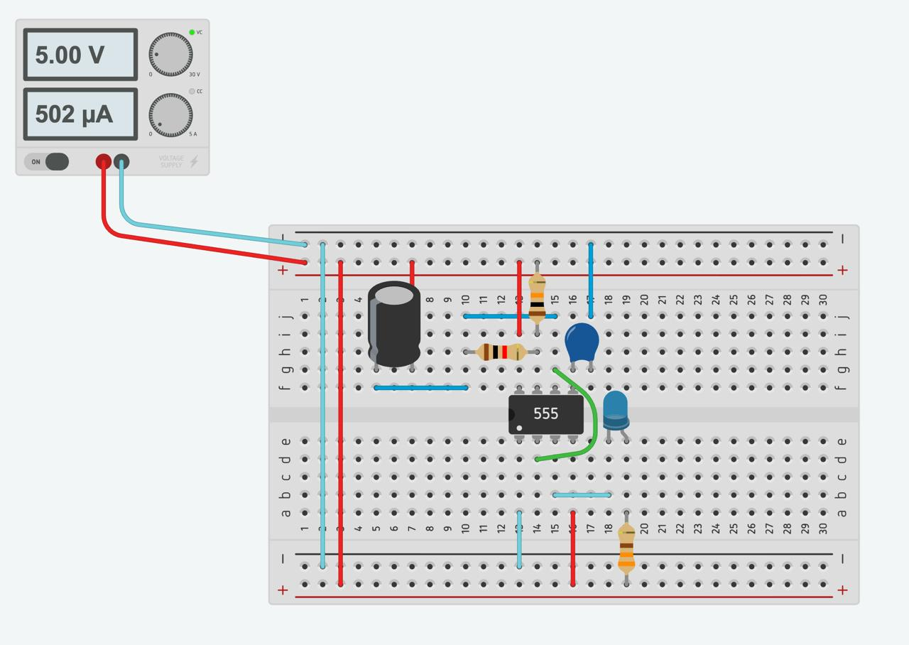
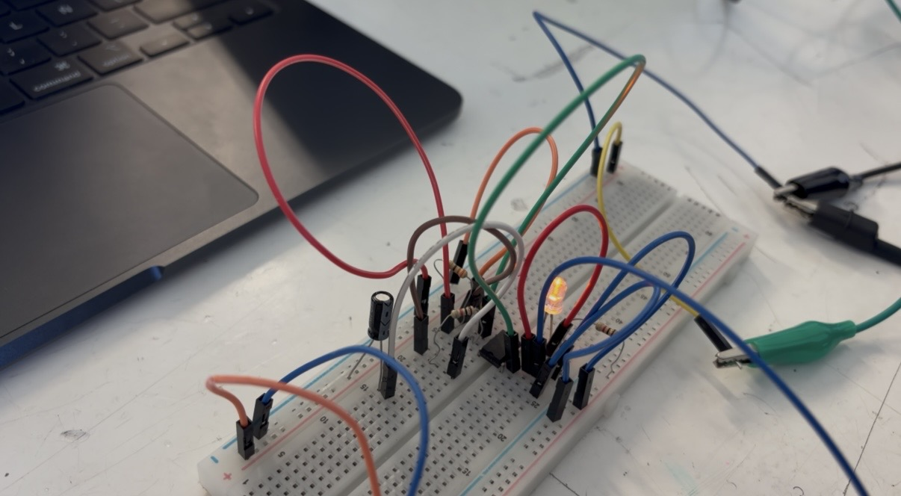
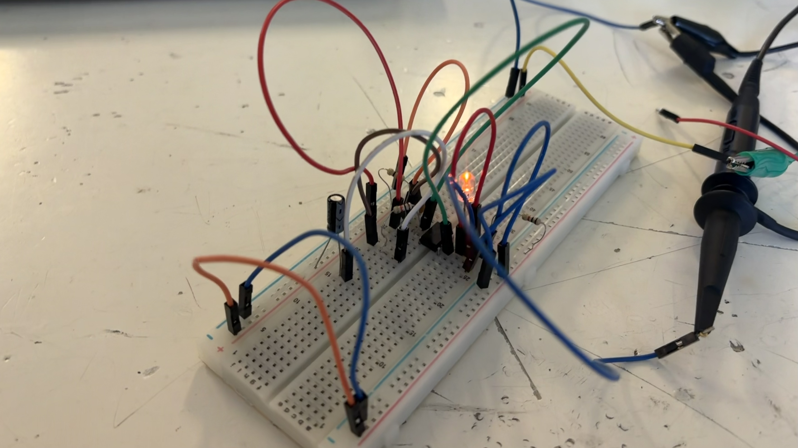

Reporte de Práctica 1: Temporizador 555 en Modo Astable
Institución: Universidad Iberoamericana Puebla
Materia: Introducción a la Mecatrónica
Tema: Electrónica 101: Temporizador 55
Lista de materiales
- (1x) Protoboard
- (1x) NE555
- (1x) LED
- (1x) Resistor para LED de 330Ω
- Resistores temporizadores:
- RA=1kΩ
- RB=10kΩ
- (1x) Capacitor electrolítico: 100µF
- (1x) Capacitor cerámico: 10nF
- Cables de conexión (jumpers)
- (1x) Puntas de fuente.
- (1x) Puntas de osciloscopio
Simulación

Fórmulas
En modo astable, el capacitor C se carga desde la fuente de alimentación a través de RA +RB. Cuando alcanza 2/3 de Vcc, el 555 activa un circuito de descarga donde C, se descarga através de RB hasta llegar a 1/3 de Vcc. Este proceso se repite continuamente y, por ello, el LED permanece parpadeando.
El tiempo que le lleva al capacitor cargarse y descargarse, determina la frecuencia con la que el LED parpadea. Esos tiempos se calculan con las siguientes fórmulas:
Tiempo de carga:
Tiempo de descarga:
Período:
Frecuencia:
Duty:
Tabla Comparativa
| Magnitud | Teórico | Medido | % de error | Inst. de medición |
|---|---|---|---|---|
| Vcc (V) | 5.0 | 5.37 | 7.4% | Multímetro |
| V de salida en Alto (V) | 3.5 | 4.4V | 25.7% | Multímetro |
| Frecuencia (Hz) | 0.69 | 5.37hz | 678% | Osciloscopio |
| Duty (%) | 52.4% | 55.18% | 5.30% | Osciloscopio |
| I del LED (mA) | 1.52mA | 1.47mA | 3.29% | Multímetro |
Para conocer el porcentaje de error se utiliza la siguiente fórmula:
Explicación de diferencias
- Vcc → Obtuvimos un porcentaje de error de 7.4%. Esto puede deberse a que la fuente de alimentación no proporciona exactamente el valor nominal de 5V. La diferencia es pequeña, por lo que el valor se encuentra cerca de lo esperado.
- V de salida en alto → Porcentaje de error de 25.7%. Esto se debe a las características internas del 555 y a la carga conectada a la salida, que serian el LED y su resistencia. Además, hay que tener en cuenta que nuestro Vcc fue un poco más alto, lo cual tambien influye en el voltaje de salida.
- Frecuencia → Tenemos un porcentaje de 678%, el cual es muy alto. Esta diferencia se debe a que el valor teórico se realizó con valores de resistencias y capacitores diferentes a los que utilizamos. Al calcular el valor teórico con las medidas de nuestros componentes, obtuvimos un resultado de 6.26Hz, que se encuentra más cerca de los 5.37Hz que medimos. La diferencia aquí se debe a la tolerancia de los componentes y a las condiciones de medición.
- Duty cycle → Porcentaje de error de 5.30%. Es una diferencia pequeña y puede ser por las variaciones de los valores de las resistencias y del capacitor, además de las condiciones de medición del osciloscopio.
- I del LED → Obtuvimos un error de 3.29%. Esta diferencia se debe principalmente a la tolerancia de la resistencia utilizada en el LED, la cual puede tener un valor un poco diferente al que utilizamos. Además, el multímetro puede tener cierta variación al medir.
Bitácora de errores
- ¿Qué falló?: Al inicio, teniamos dos cables mal conectados, eso hizo que nuestro LED no encendiera en los primeros intentos. Además, el capacitor que utilizamos al inicio tenia una capacidad menor, por lo que no almacenaba la suficiente energía para que el LED parpadeara. ES por ello que el LED se quedaba encendido en vez de parpadear.
- ¿Cómo lo encontramos?: Al revisar el circuito con la maestra nos comentó que el problema era el capacitor y nos señaló los cables que estaban mal conectados.
- ¿Cómo lo resolviste?: Corregimos la conexión de los cables y utilizamos un capacitor con mayor capacidad.Ya con eso el LED parpadeó correctamente.
Montaje en protoboard


Tania Hernández Cruz
Jesús Emiliano Hérnandez Domínguez